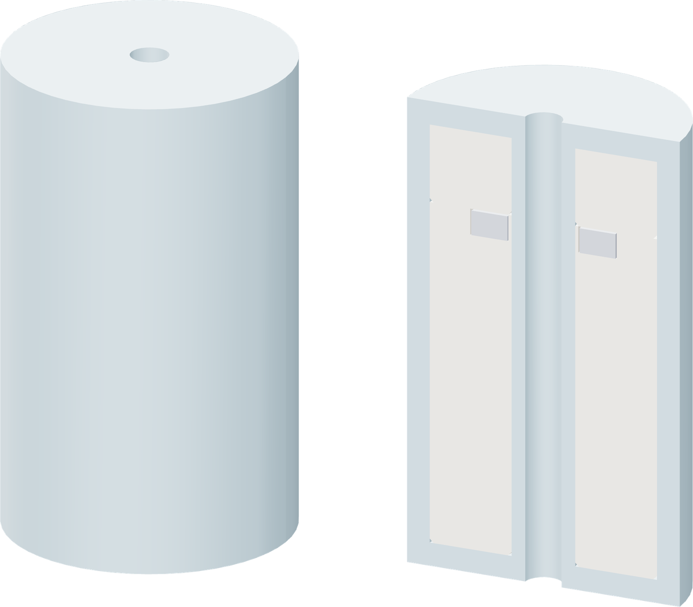

Home Soda Machine
Home Soda Machine
Magnetic
float
Dry the filament. Print the foam. Seat the magnet.
Build the PETG shell around all three pieces.

Home Soda Machine
Dry the filament. Print the foam. Seat the magnet.
Build the PETG shell around all three pieces.
